최근 멘토링에서 ncloud를 사용하여 서버배포를 하고싶다는 요청을 받았는데, 나 또한 네이버 클라우드는 경험이 없는지라 ㅎㅎ;; 공부삼아 한 번 세팅을 해봤다.
일단 클라우드에서 Kubernetes로 container를 배포를 하기 위해서는 로직이 대략적으로 이렇게 된다.
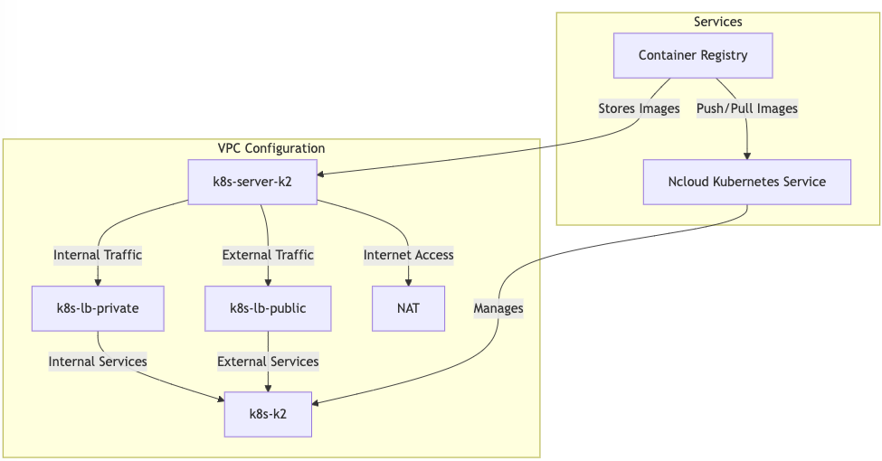
- 설명이 어렵다 할 분들을 위해서, 전체적인 로직은 Services 쪽을 보면 이해하기 쉬울 것이다.
Container Registry에 컨테이너 이미지 업로드 ->Ncloud Kubernetes Service의 Kubernetes에 컨테이너 이미지 배치 -> Kubernetes가 서버를 배포하도록 설정
이렇게만 하면 클라우드에 우리가 원하는 이미지를 띄울 수 있다. - 하지만 클라우드는
보안이 생명인 서비스인 만큼, 모든 것들이 기본적으로 private으로 설정되며 우리는 이런 리소스에 접근하기 위해서는 여러 인증을 n번 거쳐야한다. 때문에 VPC를 설정을 예쁘게 해야한다.
subnet 이름은 사람마다 취향껏 맞춰 지으면 되며, 여기서는 편의상 내 마음대로 이름을 붙여봤다.k8s-server-k2- 클러스터로 들어오는 내부 트래픽과 외부 트래픽을 관리
- 컨테이너 이미지를 레지스트리에서 가져와 클러스터에 배포
- 클러스터가 인터넷(외부 서비스)과 연결될 수 있도록 하는 Nat 관리
k8s-lb-private: 클러스터 내부에서만 접근할 수 있는 서비스들을 트래픽에 전달- 특히 내부 Pod간 통신 처리
k8s-lb-public: 인터넷을 통해 외부 사용자들이 접근할 수 있는 서비스들에 트래픽 전달- 특히 외부에서 트래픽을 받으면 pod로 라우팅함
Nat: NAT Gateway의 약자로, 외부에서 Kubernetes 클러스터 내부로의 직접적인 접근을 차단하기 위해 생성k8s-k2: Kubernetes 클러스터를 관리함. 쉽게 Kubernetes 클러스터의 worker nodes 관리하는 곳으로 생각하면 됨
이렇게 간략하게 설명을 해봤으며, 이해가 됐다면 바로 세팅으로 들어가보자.
0. NCP 콘솔 로그인
화면 맨 위 오른쪽에 콘솔 버튼을 누르면 접속할 수 있다.
1. VPC 생성하기
- VPC > VPC Management에서 생성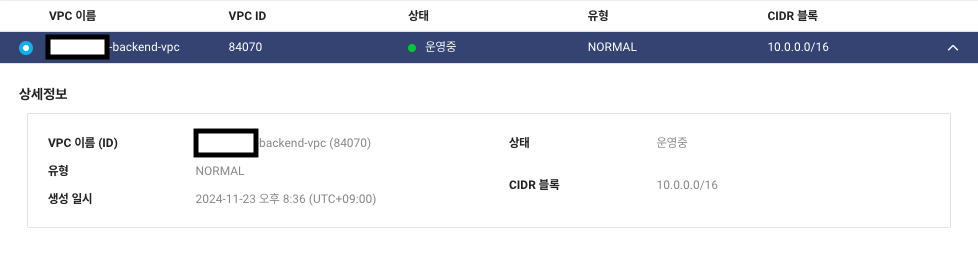
2. Subnet 생성하기
- VPC > Subnet Management에서 생성
- 1번에서 생성한 VPC 이름으로 설정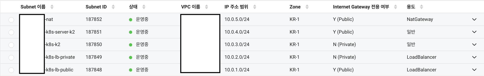
3. NAT Gateway 생성하기
- VPC > NAT Gateway에서 생성
- 1, 2번에서 생성한 VPC 및 nat subnet 설정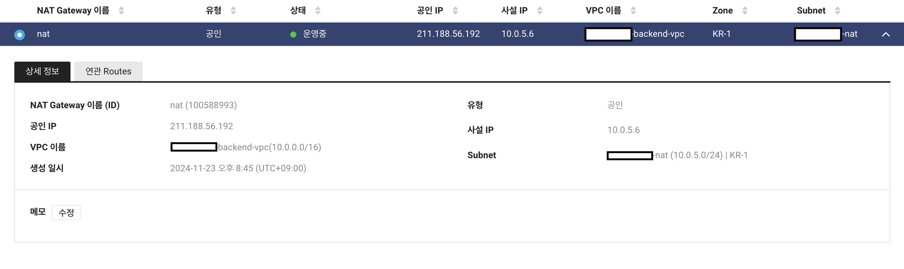
4. Routes 설정하기
- VPC > Route Table > Route Table에서
private-table선택 Route 설정에서 public access를 위해0.0.0.0/0,NATGW,nat설정의 subnet 이름추가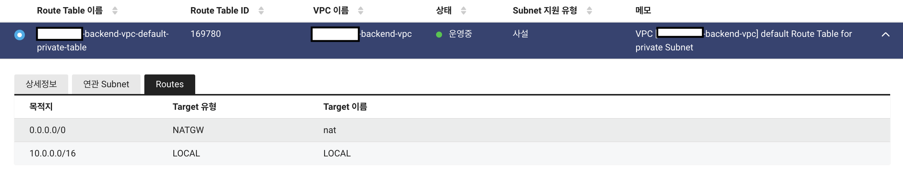
5. Object Storage 생성하기
- Object Storage > Bucket Management에서 버킷 생성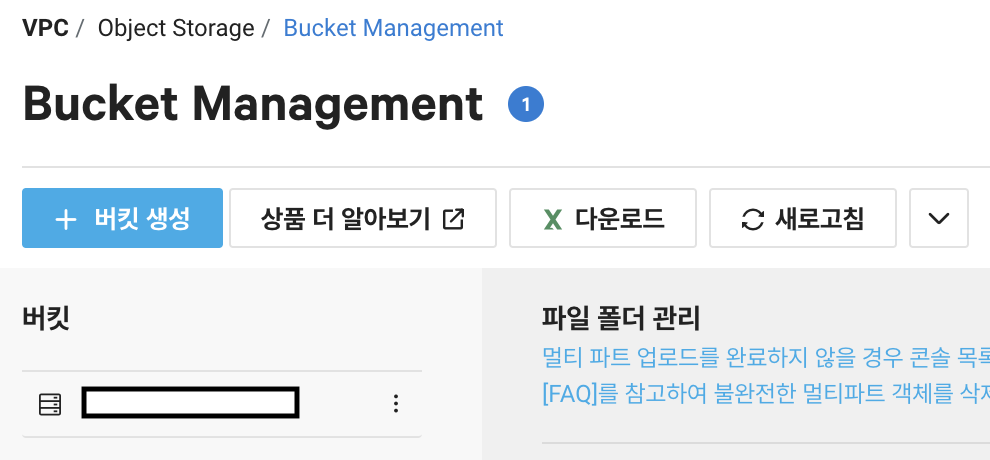
6. Container Registry 생성하기
- Container Registry에서 생성
- 5번에서 생성한 버킷으로 설정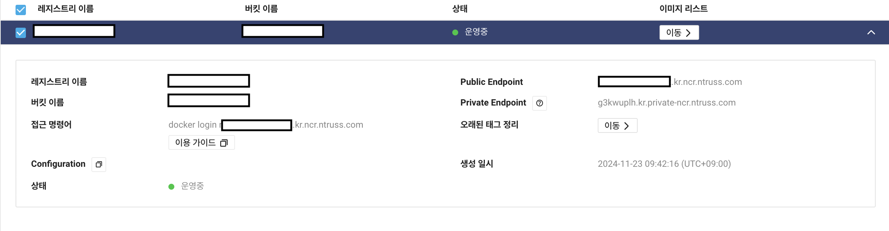
7. Ncloud Kubernetes Service 생성하기
1) VPC Ncloud Kubernetes Service Clusters에서 생성
1번에서 생성한 VPC를 선택하면 자동으로 LB Private subnet, LB Public subnet이 세팅됨
이번 실습에서는 클러스터 인증 모드를 API로 설정함
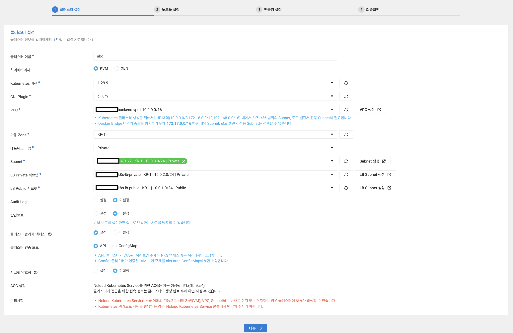설정 완료 후 다음으로 넘어가면 Nat 설정에 관한 안내창이 나오는데, 무시해도 됨(이 세팅은 3번, 5번에서 했기 때문)
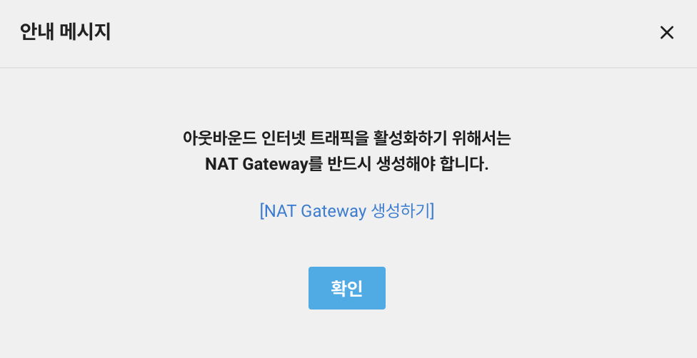
2) 노드풀 설정하기
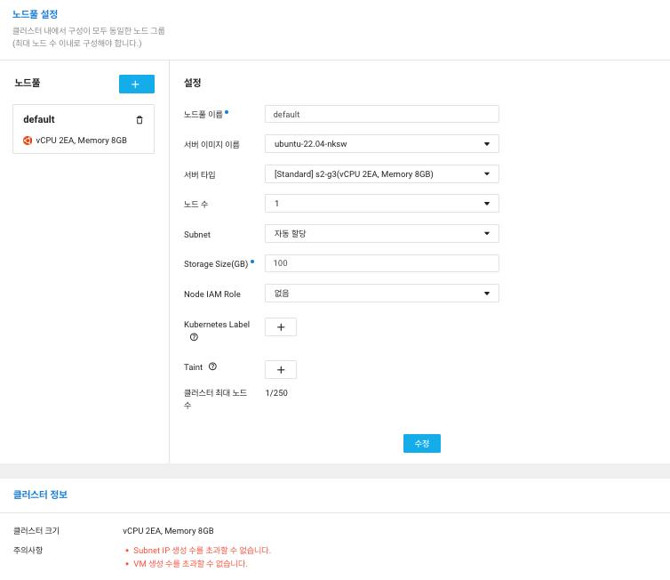3) 인증키 설정
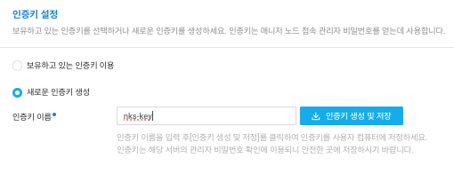모든 설정이 완료되면 아래 이미지처럼 생성됨.약 10-30분 기다려야함
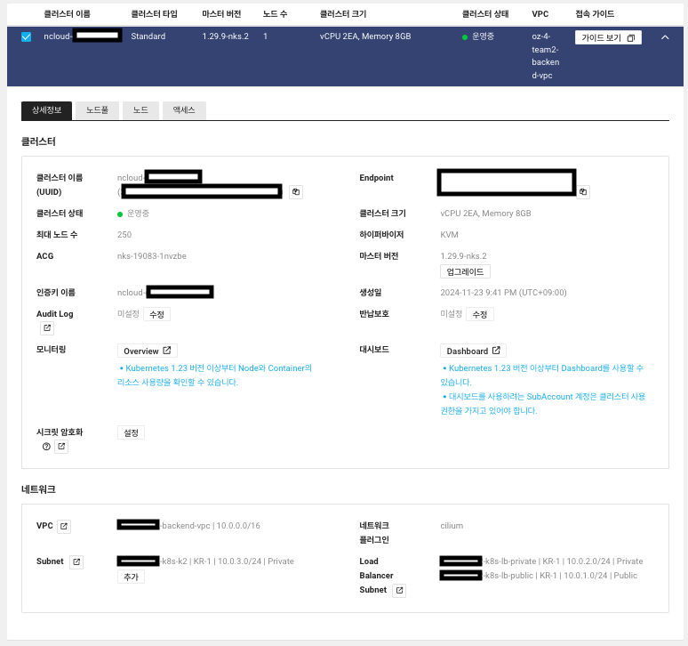
8. 사용자 인증: API 인증키 생성하기
- 계정 관리 > 인증키 관리에서
신규 API 인증키 생성을 클릭하여 API 인증키 생성하기 Access Key ID및Secret Key값을 준비해두자. 앞으로 서비스 이용을 할 때 쓸 예정
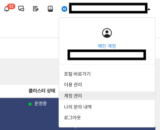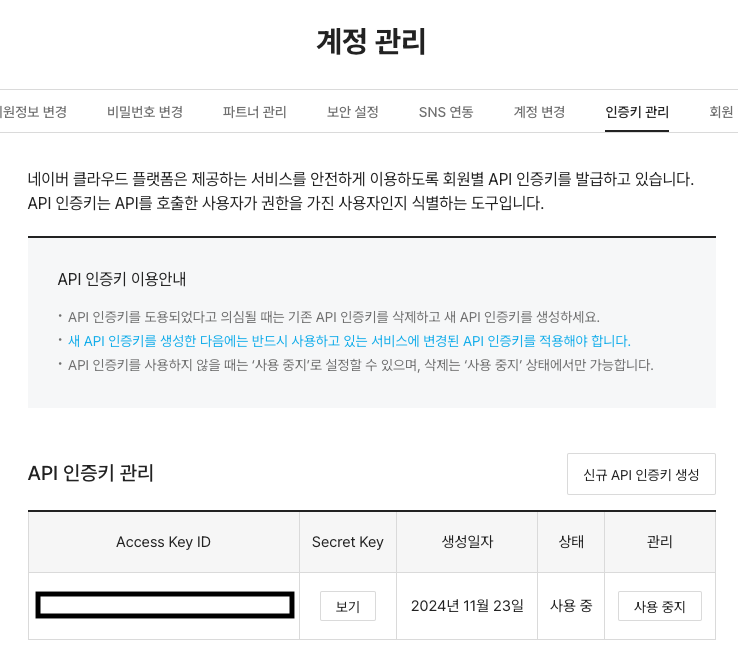
9. Container Registry에 Docker image 업로드하기
# ncloud docker login 하기
# registry-url = container registry의 public endpoint
$ docker login <registry-url>
# docker build & tag & push 하기
# docker build: ncloud의 Kubernetes 세팅이 amd64으로 되어있어 platform 옵션 추가
$ docker build --platform linux/amd64 -t <registry-url>/<repository-name>:<tag> .
$ docker tag
$ docker push <registry-url>/<repository-name>:<tag>
10. Kubernetes 설정해서 Docker image 배포하기
NKS 인증키 설정
여기를 참고하여 ncp-iam-authenticator를 설치한 후 진행
# ncloud setup
$ export NCLOUD_ACCESS_KEY=<8번에서-생성한-Access-Key-ID>
$ export NCLOUD_SECRET_KEY=<8번에서-생성한-Secret-Key>
$ export NCLOUD_API_GW=https://ncloud.apigw.ntruss.com
# nks 인증키 생성
# region이 한국이면 region-code는 KR
# 파일이 생성되지 않거나, 빈 파일이 생성됐다면 문제가 있는 것
$ ncp-iam-authenticator create-kubeconfig --region <region-code> --clusterUuid <NKS에서 생성한 cluster의 uuid> --output kubeconfig.yaml
$ export KUBECONFIG="<kubeconfig.yaml의 파일 절대경로>"
# Kubernetes가 제대로 설정됐는지 확인
$ kubectl get ns # namespace 조회. 아래같이 나오면 성공
NAME STATUS AGE
default Active 40h
kube-node-lease Active 40h
kube-public Active 40h
kube-system Active 40h
Kubernetes를 위한 yaml파일 생성
# deployment.yaml
apiVersion: apps/v1
kind: Deployment
metadata:
name: my-app-deployment
namespace: default
spec:
replicas: 1
selector:
matchLabels:
app: my-app
template:
metadata:
labels:
app: my-app
spec:
containers:
- name: my-app
image: <registry-url>/<repository-name>:<tag>
imagePullPolicy: Always
ports:
- containerPort: 8000
imagePullSecrets:
- name: regcred
# service.yaml
apiVersion: v1
kind: Service
metadata:
name: my-app-service
annotations:
service.beta.Kubernetes.io/ncloud-load-balancer-layer-type: "nplb"
service.beta.Kubernetes.io/ncloud-load-balancer-size: "SMALL"
spec:
selector:
app: my-app
type: LoadBalancer
ports:
- port: 80
targetPort: 8000
Kubernetes에 템플릿 배포 및 서비스 확인
# kubenetes secret object 생성
$ kubectl create secret docker-registry regcred \
--docker-server=<registry-url> \
--docker-username=<8번에서-생성한-Access-Key-ID> \
--docker-password=<8번에서-생성한-Secret-Key> \
--docker-email=<ncloud-email-주소>
$ kubectl get secrets # 생성이 잘 됐는지 확인하는 명령어
# yaml 템플릿 업로드
$ kubectl apply -f deployment.yaml
$ kubectl apply -f service.yaml
$ kubectl get pods # status running인지 확인하는 명령어
# 클라우드에 배포된 IP주소 확인하기
# LoadBalancer의 External IP 주소 = 곧 클라우드에 배포된 서비스 IP 주소
$ kubectl get services
NAME TYPE CLUSTER-IP EXTERNAL-IP PORT(S) AGE
Kubernetes ClusterIP 198.19.128.1 <none> 443/TCP 40h
my-app-service LoadBalancer 198.19.255.184 default-my-app-service-cfe50-100590090-dcc6483894d3.kr.lb.naverncp.com 80:30167/TCP 39h
11. 배포 페이지 접근해보기
글 업로드 시점 기준으로 서비스 중단해서 접속 안됩니다. 참고하세용
12. 만약 Docker 이미지를 업데이트를 해서 서버에 반영하고 싶다면?
Kubernetes의 deployment.yaml에 이미 imagePullPolicy 세팅이 Always로 되어있어서 같은 태그를 push했을 때는 자동으로 Kubernetes가 이미지를 추적하여 업데이트를 할 것이다.
다만 사람마다 태그 규칙이 다르며, 이 때문에 tag 버전이 업데이트 된 이미지를 업로드를 한다면 Kubernetes가 알아차리지 못하니 우리가 알려줘야 한다.
다음은 kubernets에게 새로운 container image가 생겼다는 것을 알려주는 작업이다.
deployment.yaml수정# deployment.yaml apiVersion: apps/v1 kind: Deployment metadata: name: my-app-deployment namespace: default spec: ... spec: containers: - name: my-app image: <registry-url>/<repository-name>:<tag> # tag에 맞춰 수정 ...deployment 서비스 재시작
kubectl rollout restart deployment <deployment.yaml의 metadata.name>
![[GCP] GCP에서 사용자 인증정보(OAuth)를 사용해 Access Token 받아오기](../../../../../../../coverImages/gcp.png)
![[오픈소스] 2024년 11월 오픈소스 소식지 (2): FindMy Flipper, shadPS4, Isaiah, Javascript 날짜 라이브러리 수정, Ruby 공식 문서 업데이트, ChartDB](../../../../../../../coverImages/github.png)